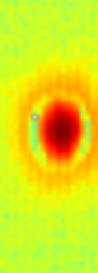
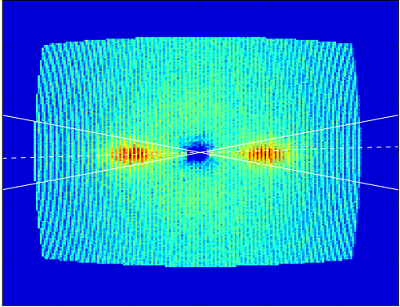
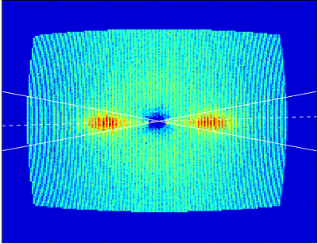

SANS Data Reduction with Python
August 8, 2016
Tina Wang
Introduction
- Mantid structure: C++ with Python bindings
- However, modern Python packages for
scientific computing provide suitable alternatives
- e.g.: Scipy
- NumPy
- matplotlib
- ...etc.
- Will be implemented in the new SANS data reduction
web interface
- Python backend
SANS
- Small Angle Neutron Scattering (SANS)
- Technique for viewing the structure of polymers and biological molecules (proteins, etc.)
Outline
- HFIR SANS Parser (HFIR XML files)
- XPath Data Search
- xarray
- Graphing Capabilities
- Beam Finder
- Sensitivity Correction
- Ansiotropic SANS Refinement
- Sector Averaging
- Double Gaussian Fitting
- Numba
Parser for HFIR SANS
xarray continued
- More code examples
- Simple task to copy axes
# (0,0) away from the beam center
data.plot()
data.x.values = beam_center.x.values
data.y.values = beam_center.y.values
# (0,0) at the beam center
data.plot()
Background Subtraction
- Subtracts out background data for more accurate calculations
- Very simple in Python:
- subtracted_data = data - backgrd_data
Translation
- Translates center to correct location
- Converts from pixels to mm
- Found at "/SPICErack/Motor_Positions/detector_trans/#text"
Graphing Capabilities
- Plotly Offline:
Integrates with web integrator
- Can be saved in a file or as a div to display in a web page
- matplotlib: Python scientific graphing library

Process Outline
- Translate according to "/SPICErack/Motor_Positions/detector_trans/#text"
- Find ROI
- Beam Center
- ndimage
- 2D Gaussian fit
- Adjust axes
- Create xarray DataArray
- Plot 1D
Beam Finder
- Problem: Mantid gives different beam center than SPICE
- SPICE is the LabVIEW-based data acquisition system
 |
Method 1: Scipy.ndimage
- scipy.ndimage.measurements.center_of_mass
- Unexpected results

Method 2: Center of Mass formula
$$\vec{p} = \frac{\sum\nolimits_{i} \sum\nolimits_{j} I_{ij} \vec {d_{ij}}}{\sum\nolimits_{i} \sum\nolimits_{j} I_{ij}}$$
- Mantid method
- Starts at the edge of the detector, and would loop until it was close to the correct point
- Very similar results to ndimage
- Unexpected results
Method 3: Absolute Maximum
- Found absolute maximum point
- Not always the same point as the center
Method 4: 2D Gaussian Fit
- Found point close to actual beam center via modified ndimage
- Used point for an initial guess for a 2D Gaussian
- Center of Gaussian: beam center
Sensitivity Correction
- Problem: We saw a pattern of vertical lines on some graphs.
- Problem: Mantid finds the center before sensitivity correction.

Compare and Contrast

Compare and Contrast

Anisotropic SANS Refinement
- Scientists needed to find the wedge angles automatically

Method
- Sector average (NumPy) time:
- 1st run: 0.180018 seconds
- 2nd: 0.029003 s
- 3rd: 0.030003 s
- Wedge Finding:
- Gaussian blur to smooth out noise
- OpenCV: MinMaxLoc function
Finding angles
- Take y-coordinate of maximum and draw line
- Gaussian Fit
- Two Gaussians to find angles
- Angles always around 180 degrees apart
- Start at first dip and add 360 to estimate location of angles
 

Summary
- XML to Python Dictionary/JSON Parser
- xarray
- Beam finding methods
- Scipy
- Absolute maximum
- 2D Gaussian
- Sensitivity Correction
- Anisotropic SANS refinement
- Angle finding
- Numba
Special Thanks
- Ricardo Leal
- Thomas Proffen